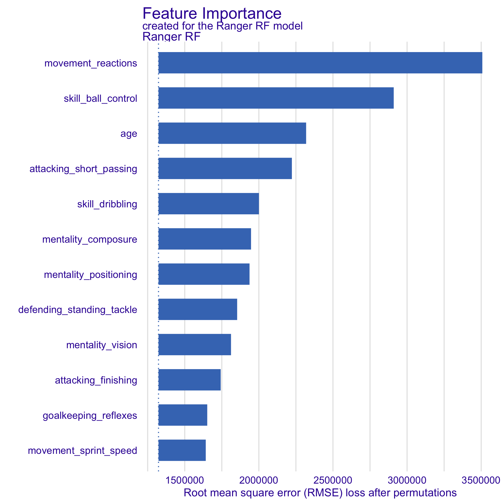
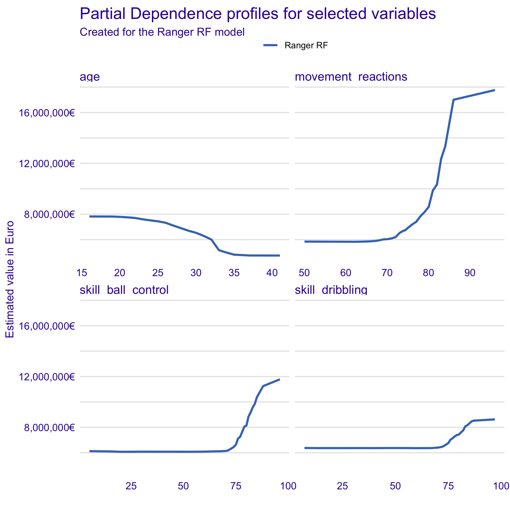
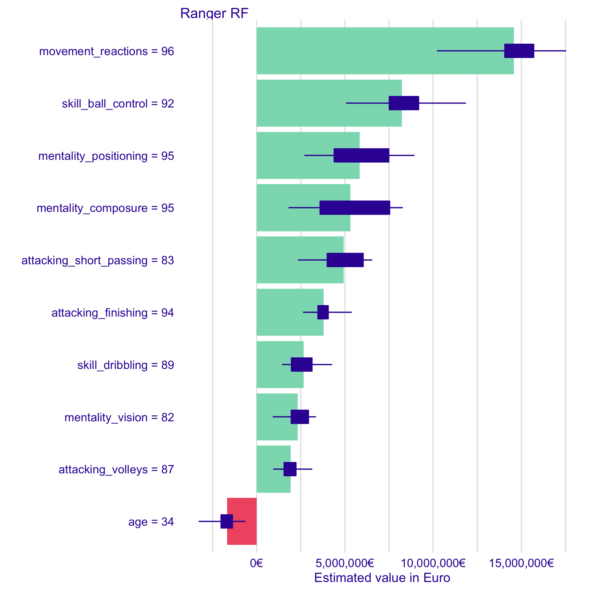

Intro
In this post i follow a description on how to use the DALEX package that can help on model interpretation. The full example can be found in the MLR3 book here.
The authors used the FIFA20 dataset to train a random forest model that predicts the soccer player worth. Subsequently they show how to use DALEX to analyze the model behaviour on a global level and of a single prediction.
Run and interpret a statistical model
Get data and packages
First of all we to load some packages. Also we need to load the dataset that is included in the DALEX package.
library("DALEX")
library("DALEXtra")
library("mlr3")
library("mlr3learners")
data(fifa)
The data is already preprocessed and cleaned. In the DALEX package you will find
the top 5000 football players available. Each observation, player, is described
with 42 features. The features nationality, overall, potential and
wage_eur will be removed before start modelling.
dim(fifa)
[1] 5000 38
as.data.frame(names(fifa))
names(fifa)
1 value_eur
2 age
3 height_cm
4 weight_kg
5 attacking_crossing
6 attacking_finishing
7 attacking_heading_accuracy
8 attacking_short_passing
9 attacking_volleys
10 skill_dribbling
11 skill_curve
12 skill_fk_accuracy
13 skill_long_passing
14 skill_ball_control
15 movement_acceleration
16 movement_sprint_speed
17 movement_agility
18 movement_reactions
19 movement_balance
20 power_shot_power
21 power_jumping
22 power_stamina
23 power_strength
24 power_long_shots
25 mentality_aggression
26 mentality_interceptions
27 mentality_positioning
28 mentality_vision
29 mentality_penalties
30 mentality_composure
31 defending_marking
32 defending_standing_tackle
33 defending_sliding_tackle
34 goalkeeping_diving
35 goalkeeping_handling
36 goalkeeping_kicking
37 goalkeeping_positioning
38 goalkeeping_reflexes
fifa[,c('nationality', 'overall', 'potential', 'wage_eur')] <- NULL
for (i in 1:ncol(fifa))
fifa[,i] <- as.numeric(fifa[,i])
fifa[1:5,][,1:5]
value_eur age height_cm weight_kg attacking_crossing
L. Messi 95500000 32 170 72 88
Cristiano Ronaldo 58500000 34 187 83 84
Neymar Jr 105500000 27 175 68 87
J. Oblak 77500000 26 188 87 13
E. Hazard 90000000 28 175 74 81
Build a model with the mlr3 framework
First we create a regression task with setting the variable to be explained as value_eur. After
that we have to select a learner, here regr.ranger, that should be trained on the task. Keep in
mind that mlr3 provides many different learners and these learners can used in a benchmark grid for
model comparison. Here i followed simply the description from their website. They do not
use a cross-validation-instead, they run the model with the full dataset.
fifa_task <- as_task_regr(fifa, target = "value_eur")
fifa_ranger <- lrn("regr.ranger")
fifa_ranger$param_set$values <- list(num.trees =250)
fifa_ranger$train(fifa_task)
fifa_ranger
<LearnerRegrRanger:regr.ranger>
* Model: ranger
* Parameters: num.trees=250
* Packages: ranger
* Predict Type: response
* Feature types: logical, integer, numeric, character, factor, ordered
* Properties: importance, oob_error, weights
Use DALEX to analyze the model
Now we have a model object called fifa_ranger. With the following lines we create a new explainer.
ranger_exp <-explain_mlr3(fifa_ranger,
data = fifa,
y = fifa$value_eur,
label = "Ranger RF",
colorize = FALSE,
verbode = FALSE)
Preparation of a new explainer is initiated
-> model label : Ranger RF
-> data : 5000 rows 38 cols
-> target variable : 5000 values
-> predict function : yhat.LearnerRegr will be used ( default )
-> predicted values : numerical, min = 432295.7 , mean = 7472161 , max = 89463733
-> model_info : package mlr3 , ver. 0.8.0 , task regression ( default )
-> residual function : difference between y and yhat ( default )
-> residuals : numerical, min = -8771073 , mean = 1125.943 , max = 17545100
A new explainer has been created!
Global level
The function model_parts is used to calculate the importance of variables in the model. There ist
also the possibility to visualize the results. Here we see that the variable movement_reactions
and skill_ball_control are the most important variables.
fifa_vi <- model_parts(ranger_exp)
head(fifa_vi)
variable mean_dropout_loss label
1 _full_model_ 1323096 Ranger RF
2 value_eur 1323096 Ranger RF
3 weight_kg 1382466 Ranger RF
4 movement_balance 1387662 Ranger RF
5 height_cm 1392005 Ranger RF
6 goalkeeping_kicking 1392349 Ranger RF
plot(fifa_vi, max_vars = 12, show_boxplots = FALSE)

Once we have identify the most important variables, we can use them to show how the model changes
when changing the variables. In general we see, suprisingly, that higher skills are related with
player´s worth. Except the variable age.
selected_variables <- c("age",
"movement_reactions",
"skill_ball_control",
"skill_dribbling")
fifa_pd <- model_profile(ranger_exp,
variables = selected_variables)$agr_profiles
fifa_pd
Top profiles :
_vname_ _label_ _x_ _yhat_ _ids_
1 skill_ball_control Ranger RF 5 6132546 0
2 skill_dribbling Ranger RF 7 6380134 0
3 skill_dribbling Ranger RF 11 6373901 0
4 skill_dribbling Ranger RF 12 6371453 0
5 skill_dribbling Ranger RF 13 6370653 0
6 skill_dribbling Ranger RF 14 6370721 0
plot(fifa_pd) +
scale_y_continuous("Estimated value in Euro",
labels = scales::dollar_format(suffix = "€", prefix = "")) +
ggtitle("Partial Dependence profiles for selected variables")

Single prediction
We also can analyze how the model behaves for a single prediction. Here i used the player Cristiano
Ronaldo. The function predict_parts is here our friend. To inspect the local behaviour of the
model we use the SHAPLEY approach.
ronaldo <- fifa["Cristiano Ronaldo",]
ronaldo_shap_ranger <- predict_parts(ranger_exp,
new_observation = ronaldo,
type = "shap")
plot(ronaldo_shap_ranger) +
scale_y_continuous("Estimated value in Euro", labels =
scales::dollar_format(suffix = "€", prefix = ""))

Final thoughts
First of all MLR3 is a great package with a lot of features. I am really excited if a keras learner implementation will be ready. The full dataset of the EA Sports Game FIFA2020 is available on Kaggle. As a sport scientist i think it is worth to analyze this data in depth.